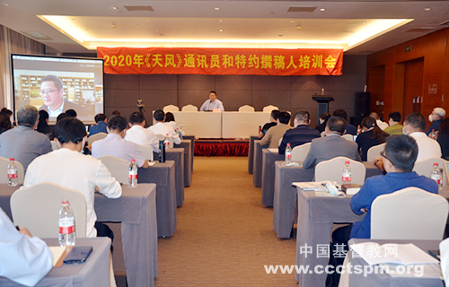
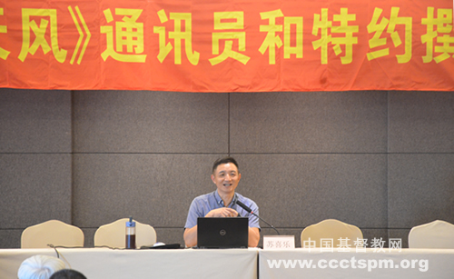
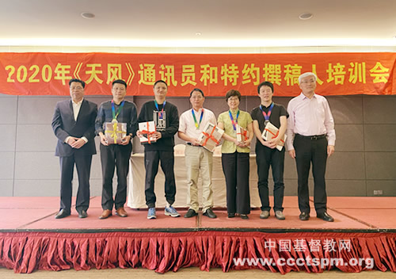
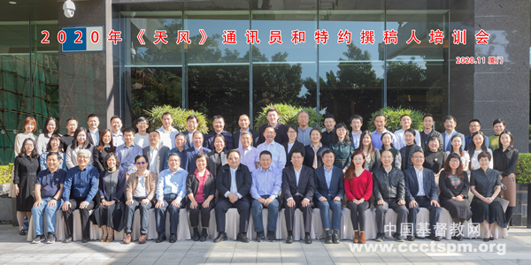

-
 手机版
手机版

-
 APP下载
APP下载
-
 微信
微信

手机版
APP下载
微信
——《天风》通讯员和特约撰稿人培训会在厦门召开
 收藏
收藏

2020年11月10日至11日，《天风》通讯员和特约撰稿人培训会在风景秀丽、气候宜人的福建厦门召开。来自全国各地近60位通讯员和特约撰稿人带着共同的使命参加培训。中国基督教协会副会长兼总干事单渭祥牧师、《天风》杂志主编蒿志强牧师出席会议。
单渭祥牧师在开幕式讲话中指出，我们要在中国新时代处境中办好教会，推进基督教中国化进程，需要不断探索和思考。在人人都是自媒体的微时代，作为写作者首先应当是位学习和思考者，努力提升自己，带着责任与担当为文、带着理性和大爱写作，积极主动地为中国教会贡献文字的力量。单牧师鼓励同工们在教务百忙中挤出时间，多出新作、力作、大作，用手中的笔祝福中国教会并产生正向效应，继而祝福中国社会。开幕式由蒿志强牧师主持。

《中国宗教》杂志社主编、中国宗教学会理事胡绍皆通过腾讯会议平台，以“新时代中国宗教媒体的机遇与挑战”为题作了视频讲座。胡主编认为，分析和把握宗教媒体特别是传统宗教媒体在新时代的机遇与挑战，要胸怀“两个大局”（即“中华民族伟大复兴的战略全局和世界百年未有之大变局”），找准自身位置，发挥自身优势：一是要增强文化自觉与文化自信，弘扬优秀传统文化，使自身成为彰显中华文化自信的重要窗口、展示中华文化软实力的重要平台，为宗教中国化铺陈路径、营造氛围、助力赋能；二是要利用自身专业素养与话语优势，积极助力中国宗教界发挥民间外交特殊作用，向世界讲好“中国宗教故事”，让中国宗教的好声音赢得国际社会的理解与认同。谈到如何应对新媒体迅猛发展给传统宗教媒体带来的危机与挑战，胡主编提出，要“以不变应万变”，保持继续深耕纸媒的办刊定力，找到话语支点，把内容建设的看家本领发挥得更好；要“以变应变”，在继续深耕纸媒主业的同时，增强创新意识与创新能力，用好信息技术革命成果，把纸质宗教媒体的内容优势导入移动互联网中，运用互联网技术重新整合构建自身实力，实现技术与内容双轮驱动，推动传统宗教媒体与新媒体融合发展。最后，胡主编建议，新时代宗教期刊编辑应主动适应时代要求，明晰行业发展趋势，不断加强自身建设，着力提高政治把关、业务把关、选题策划、融合发展和对外传播等五种能力。

金陵协和神学院教师苏喜乐牧师以“文章表面，表面文章？——浅谈色彩、图文与阅读”为题进行讲座。苏牧师通过大量图片带领同工们体验感知色彩，理解色彩对人心理的影响，认知基督教的象征图案，并讲解如何在教会的读物和教会生活中应用特定的色彩和图案，如何在装帧和文本中结合特定色彩和图案以提升阅读有效性。不论是传统纸质读本还是新媒体介质，通过对合理的色彩和图案的应用，均可使阅读者在阅读的选择和阅读效率上获得提升，以在现代快节奏生活中可以真正进入阅读。因此，文章的表面，即文章示于读者的第一感知，是引导读者进入阅读并帮助读者阅读的有力保证，并非可有可无的“表面文章”。
培训期间，《天风》、网站和出版发行同工，还分别就2020年《天风》问卷调查报告、通讯稿写作及其要求与稿件分析、2020年《天风》订阅情况分析和基督教全国两会出版发行工作进行了介绍；6位通讯员和撰稿人分别就《天风》复刊40周年感恩和通讯报道经验进行了分享。在分组讨论中，撰稿人组围绕《天风》稿件创作、栏目优化、写作人才发掘等话题进行讨论；通讯员组就《<人民日报>记者说：好稿是怎样“修炼”成的》畅谈阅读心得、稿件创作。同工们畅所欲言、各抒己见，为进一步办好《天风》出谋划策。大家不仅学习到了知识，而且增强了团契性，立志担负使命，继续用文字砥砺前行。
两天会议均安排了早灵修。开幕灵修由上海市基督教教务委员会主席耿卫忠牧师主持。福建省基督教三自爱国运动委员会副主席、厦门市基督教三自爱国运动委员会主席陈美满牧师援引《歌罗西书》3章16节，与大家分享了“以智慧肩负时代托付”为题的信息，以从神而来的智慧传讲中国教会的好故事，完成神所托付的责任和使命；用智慧应对时代的挑战，以文字见证和传扬福音。第二天会前灵修由四川省基督教两会副主席兼秘书长、副会长兼总干事张健牧师主持，陕西省基督教两会副主席、副会长兼总干事李世峥牧师援引《以弗所书》1章7节至9节等经文，以“文字侍奉者的智慧”为题证道。李牧师从有源头的、有功效的、有目标的智慧三方面劝勉同工在全媒体与5G时代，“用诸般的智慧劝戒各人、教导各人”。

闭幕礼上，中国基督教协会副会长、传媒事工委员会主任张克运牧师和《天风》杂志主编蒿志强牧师向评选出的2020年《天风》优秀通讯员、优秀特约撰稿人和专栏作者共17位同工颁奖。张克运牧师祝贺此次会议圆满成功与获得奖项的各位幕后英雄。他希望大家不断提升撰写能力和稿件质量，期待大家基于福传牧养、时代需要和未来发展，积极支持和参与传媒工作，共同促进中国基督教的传媒事业。

蒿志强牧师做会议总结，指出此次相聚，机会难得；会议培训，内容迭代，有理论、有实践、有导向、有分享。他劝勉同工们要有“区块链”精神，以“高颜值”、精准的文字，做好传媒人，作者、编者与读者，融合互动，携手并进；勉励大家紧扣时代脉搏，书写好故事，传播正能量，为中国教会持续谱写美好的历史，“惟专一，忘乎后，奋乎前”。
（摄影：杜鹏）
编辑：莉莉
审校：加恩